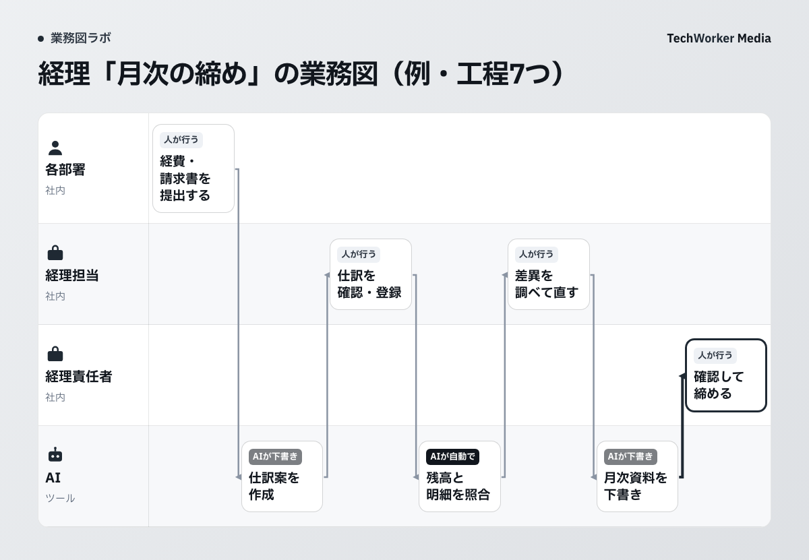
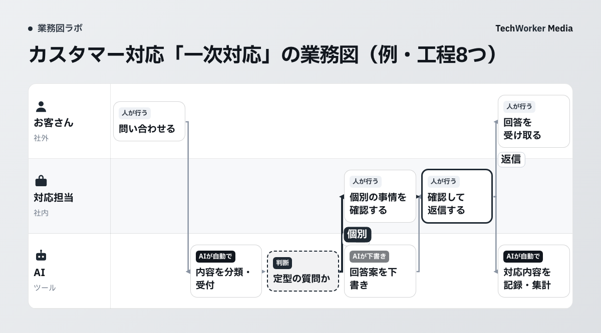
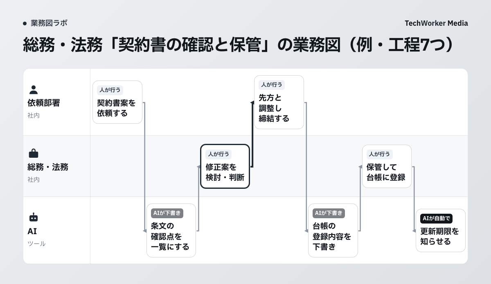

部署別 業務図テンプレート集
AIに任せる工程の見つけ方つき
経理、人事労務、カスタマー対応、総務・法務、営業の5つの部署の業務図の例と、自社の業務を書き込める空の型をまとめました。工程ごとにAIへ任せる範囲を決める手順もついています。
はじめに：この資料の使い方
この資料は、部署の仕事を1枚の図にして、AIに任せる工程を見つけるための道具です。例を見て、空の型に自社の業務を書き込み、札を付けます。
業務図とは、誰が、どの順番で、何を使って進めるかを、工程でつないで1枚に描いたものです。工程とは、業務を作業の単位に分けたひとつひとつのことです。
図の見方
横の帯は、誰がやるかを表します。左から右へ、仕事が進みます。各工程の上の札が、任せ方を表します。
図の中の「AIが下書き」は、人が確認することを前提にした札です。
使い方
2. 第3章の空の型に、自社の工程と担当を書きます。
3. 第4章の質問で、工程ごとに札を付けます。
4. AIがやらないことと、確認する人を書き添えます。
部署別の業務図の例（5部署）
各部署の業務を、1枚の業務図にしました。図の下の表で、任せる候補、人が判断する工程、AIがやらないことを整理しています。
経理、人事労務、カスタマー対応、総務・法務の4つは、一般的な流れをもとにした例です。使うシステムは、会計ソフトや勤怠システムのような一般名で書いています。営業は、TechWorkerの実例です。
例1 経理「月次の締め」

例です。自社の業務に合わせて工程と担当を直してください。
| AIに任せる候補の工程 | 人が判断する工程 | AIがやらないこと |
|---|---|---|
|
|
|
例2 人事労務「入社の手続き」

例です。自社の業務に合わせて工程と担当を直してください。
| AIに任せる候補の工程 | 人が判断する工程 | AIがやらないこと |
|---|---|---|
|
|
|
例3 カスタマー対応「問い合わせの一次対応」

例です。自社の業務に合わせて工程と担当を直してください。
| AIに任せる候補の工程 | 人が判断する工程 | AIがやらないこと |
|---|---|---|
|
|
|
例4 総務・法務「契約書の確認と保管」

例です。自社の業務に合わせて工程と担当を直してください。
| AIに任せる候補の工程 | 人が判断する工程 | AIがやらないこと |
|---|---|---|
|
|
|
例5 営業「1回目商談」

TechWorkerの実例です。CompanyMap AIの画面で作成した業務図をもとにしています。
| AIに任せる候補の工程 | 人が判断する工程 | AIがやらないこと |
|---|---|---|
|
|
|
自社用の空の型
自社の業務を書き込むための型です。印刷して手で書いても、画面に写して打ち込んでも使えます。
型1：業務図の下書き
左の列に担当を書きます。工程は、仕事が進む順に左から右へ書いていきます。工程名は「見積を送る」のように、動詞で終えます。
| 担当（帯） | 1 | 2 | 3 | 4 | 5 | 6 | 7 | 8 |
|---|---|---|---|---|---|---|---|---|
| お客さん・社外例：問い合わせる人 | ||||||||
| 担当者例：部署の担当者 | ||||||||
| 責任者例：確認して決める人 | ||||||||
| AI・ツール例：使うシステム名も書く |
型2：工程ごとの札と書き込み
型1で書いた工程を、1行ずつ書き写します。札は、第4章の質問で決めます。
| 工程名 | 担当 | 札自動／下書き／人 | AIがやらないこと | 確認する人と見る点 |
|---|---|---|---|---|
札の付け方
任せる範囲は、工程ごとに段階をつけて決めます。業務全体に1つの答えを出す必要はありません。
見る点は3つです
工程ごとに、お客さんに届くか、元に戻せるか、判断の基準を文章で書き切れるかを見ます。たとえば社内の集計は、間違えても直せます。お客さんへの送信や台帳の書き換えは、元に戻しにくい工程です。
2つの質問で札を決めます
「AIが自動で」は、あくまで候補です。最初は迷う工程を「人が行う」か「AIが下書き・人が確認」にして、動かしながら軽くしていきます。
5つの手順
工程に分ける
業務を工程に分け、動詞で終わる名前を付けます。担当ごとに並べると、受け渡しが見えます。
影響を見る
お客さんに届くか、元に戻せるか、基準を書き切れるかを、工程ごとに見ます。
札を付ける
上の2つの質問で、3つの札から選びます。
AIがやらないことを書く
「対象は操作しない」の形で、1行にします。たとえば「CRMの登録内容は書き換えない」です。
使うシステムと見直す日を決める
工程ごとに使うシステムを書くと、AIに渡す権限の範囲が見えます。札を見直す日も、先に決めておきます。
慎重に付ける工程
金銭の取引、法務の判断、人事、法令上重要な手続きは、人の承認を必ず通すようにと、Microsoftの公式資料（Multistage and AI approvals in agent flows）が注意しています。自社でこれらに近い工程は、「人が行う」札から始めます。
人が確認する工程には、確認する人と見る点も書き添えます。AIの出力を形だけ承認することを防ぐためです。
うまくいかない例
確認する人を決めない。AIの出力が、そのままお客さんに届きます。
札を見直さない。業務が変わると、任せ方が実態と合わなくなります。
次の一歩：自社の業務図をつくる
まず、1つの部署の、1つの業務フローを選びます。第3章の型に工程を書き出し、札を付けるところから始めます。
業務図を一から描く時間が取れない場合は、CompanyMap AIが使えます。CompanyMap AIは、AIの聞き取りで、部署の業務フローを業務図にするサービスです。聞き取りの答えをもとに、工程と担当を1枚にまとめます。
部署の業務フローを、
AIの聞き取りで業務図にします。
工程、担当、使うシステムを1枚にまとめ、任せる工程を決める土台をつくります。
CompanyMap AIを見る →© 2026 TechWorker Inc. — 部署別 業務図テンプレート集｜AIに任せる工程の見つけ方つき